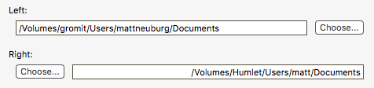
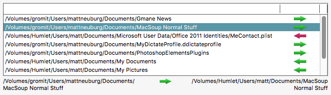

SyncMe4 is a simple folder synchronizer. It’s “simple,” but still very powerful; I’ve been using it for many years to synchronize entire computers to one another (I have a desktop computer and a portable, and I need them to be in synch with one another). It works fine on a single computer, or between two hard disks, or between two computers, connected by File Sharing. But still, it is simple; it lacks saving of configurations and all sorts of other bells and whistles, and therefore requires more manual attention than other synchronizers might need. And it uses a very simple algorithm for deciding which of two files with the same name should override the other: it compares modification dates, and that’s all. On the other hand, I’m releasing it for free, so there’s no point complaining.
Note: The name “SyncMe4” is because this is the fourth major version of this application that I’ve written; the first version, SyncMe, was never released publicly, even though I used it personally for many years. The application icon is a rather elaborate pun on the name “SyncMe”; you get extra points if you can explain the pun.
Use of SyncMe4 involves four steps:
Specify two folders to be synchronized with one another.
Preflight the folders. This means that SyncMe4 generates a list of all actions it would like to perform in order to synchronize the folders.
Edit the list, if necessary. At the very least you will want to study the list carefully, to make sure you approve of everything SyncMe4 is offering to do.
Synchronize.
Let’s take each step in turn.
The two folders are conceived of as being positioned “left” and “right”. These positions are not meaningful in real life, but you need to imagine them this way in order for SyncMe4’s symbols and layout to make intuitive sense to you.
So, in your own mind, settle which folder is to be “left” and which is to be “right”, and then drag the folders into the respective “left” and “right” text fields at the top of the window (or use the Choose buttons).

Press the Preflight button.
SyncMe4 will study the contents of both folders, recursively, making a list of all circumstances that might require reconciliation. Notice that this step makes no changes to your files and folders; SyncMe4 is merely studying the situation.
This is step can be time-consuming. You might want to go get a cup of coffee while SyncMe4 works. Also, it’s a good idea to limit the size of folders to be synchronized; it would probably not be a good idea to ask SyncMe4 to synchronize two complete copies of a user’s Home folder, for example. It’s better to have both Home folders divided into several subfolders and synchronize each of those pairs in a separate operation.
Note: SyncMe4 maintains an internal list of names of files and folders that it will ignore while preflighting. You can examine and modify this list using the Settings window. If a file or folder has a name that appears in the list, SyncMe4 will not list it, and if it is a folder, SyncMe4 will neither list it nor examine its contents. In this way you can avoid encountering unwanted files such as the ubiquitous invisible .DS_Store files. Note that the Settings window uses backslash-escaping to represent linefeed characters (e.g.
"\r").Also, SyncMe4 will automatically ignore alias files and symlinks when preflighting.
When SyncMe4 is finished preflighting, it presents the results of its study as a list of proposed operations. In the next section, we’ll discuss the meaning of this list.

The list consists of the pathnames of files and folders that SyncMe4 is proposing to copy from within one of your chosen folders to the other. Each pathname is what I will call a source. The file or folder that will be created as a result of this copying operation, I call the target. The target is not shown in the list; only sources are shown.
Next to each source pathname is an arrow specifying the operation SyncMe4 is proposing to perform. You need to understand the meaning of these arrows, which is as follows:
The direction of the arrow shows which way the copy will be performed. For example, a right-pointing arrow means that the source file, which appears in the list, is in the left folder, and that SyncMe4 is proposing to copy it to the right folder. (You see now why it is so important to envision the two folders as being “left” and “right”.) Think of the arrow as pointing from the source to the target.
The color of the arrow shows why the copy will be performed. A green arrow means that the target file or folder does not exist. A red arrow means that target file or folder is older than the source (with respect to its modification date).
As the illustration above shows, you can also select a line of the list to see, below the list, a spatial description of what operation that line represents. The file or folder from the “left” folder is shown on the left, and the file or folder from the “right” folder is shown on the right. Between them is the arrow, pointing from the source to the target. If the arrow is green, the target does not exist (but it will if you permit SyncMe4 to perform this operation). If the arrow is red, the target does exist (but it will be deleted, and replaced by a copy of the source, if you permit SyncMe4 to perform this operation).
Your task now is to study the list and modify it if it contains any operations that you don’t want performed. The main modification you can make is to select an item or items and choose Item > Remove From List. Note that this has no effect upon the Finder; it merely removes a proposed operation from the list, so that the proposed copy will not be performed.
Another modification you can make is to select an item with a red arrow and choose Item > Reverse Direction. This, as the name suggests, causes the direction of the operation to be reversed; the red arrow now points the other way. The source has become the target, and the target has become the source. This might make sense to do, for example, if you have accidentally modified the file on the target computer, so that it is newer, but what you really want to do is copy the older, untouched file to replace the newer file.
If you need to study the source file or the target file, select a line of the list and choose Item > Reveal (or, by holding the Option key, Item > Reveal Target). This selects and shows the item in the Finder. (If you choose Reveal Target and the target item does not exist, its containing folder is shown in the Finder.)
Finally, you can choose Item > Move to Trash. This moves the source file to the trash and removes it from the list. This would make sense if the source file or folder not only does not need copying but should not even exist. (By holding the Option key, you can choose Item > Move Target to Trash.)
Warning: The Move to Trash operation is dangerous! Not only are you moving a file or folder to the trash, but if the file or folder is on a remote computer connected via file sharing, it will be deleted immediately and irreversibly. If in doubt, don’t do this! Just remove the problematic operation from the list and deal with the situation manually later.
When you are absolutely satisfied that you want every operation in the list performed, choose Item > Copy All. This will cause every operation in the list to be performed: every source item in the list will be copied, and that copy will become the proposed target.
This operation can be time-consuming, especially when working across a wireless network via file sharing.
As each operation is performed, it is removed from the list. If an operation fails for some reason, it is left in the list and everything comes to a halt; open the Error Log window for a (probably useless) description of the error. You might proceed by deleting that line from the list and choosing Item > Copy All again.
The most important technical fact to understand is that SyncMe4 uses the Finder for deletion and copying operations. This means that if the Finder would be unable to delete or copy a file, for whatever reason, SyncMe4 will also be unable to do so. For example, there might be a permissions problem, a file might be locked, an application might contain a busy resource, there could be a Finder bug, and so forth. This architecture is a deliberately chosen feature. The point is to provide you with a measure of assurance and safety: What SyncMe4 does is merely, and precisely, what you could have done manually using the Finder.
On the other hand, when SyncMe4 preflights your folders, it uses some slightly lower-level routines. This can result in some apparent paradoxes. For example, when preflighting, SyncMe4 will list invisible files, and will dive into invisible folders, even though these are invisible in the Finder. If you subsequently try to perform an operation involving copying from within one invisible folder into another invisible folder, the operation will fail, because the Finder can’t do that. However, there’s a simple workaround: Change the Finder’s preferences, to make invisible folders visible. (This may be readily done in the Finder by pressing Command-Period.) The operation can then be performed.
-- Matt Neuburg
matt@tidbits.com
https://www.apeth.net/matt/default.html